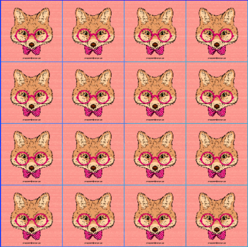

Matching Fox
As promised last year, we have brought you the best game of the year: matching-blocks. Take this memory adventure and discover just how great your mind can become.
You may wonder how we came up with the idea. Well, as you grow older, your memory starts to decrease, so, to fight that, we made a game that trains your mind to remember more in a short time. You could try playing the game a few times and see if it gets easier the more you play it.
You're still young, your mind is fresh and ready to learn. Maintain your speed with our games or you could visit our collection of recomendations and see what other people have devised to stay smart for as long as possible.